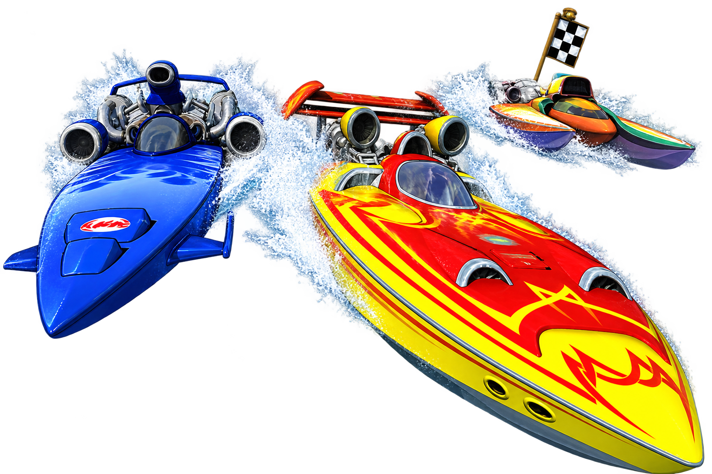

Xbox 360 arcade boat racing · Native PC port
HYDRO THUNDER HURRICANE.
Rocket-powered racing, now on Windows and Linux. HydroThunderPORT is an experimental native PC port built with ReXGlue and Vulkan.
Community-made · Unofficial · Original game files required

Arcade speed. Native PC execution.
Hydro Thunder Hurricane (HTH) is the Xbox 360 arcade boat racing game. HydroThunderPORT brings it to Windows and Linux through experimental native recompilation. Find downloads, installation and compatibility details on GitHub.